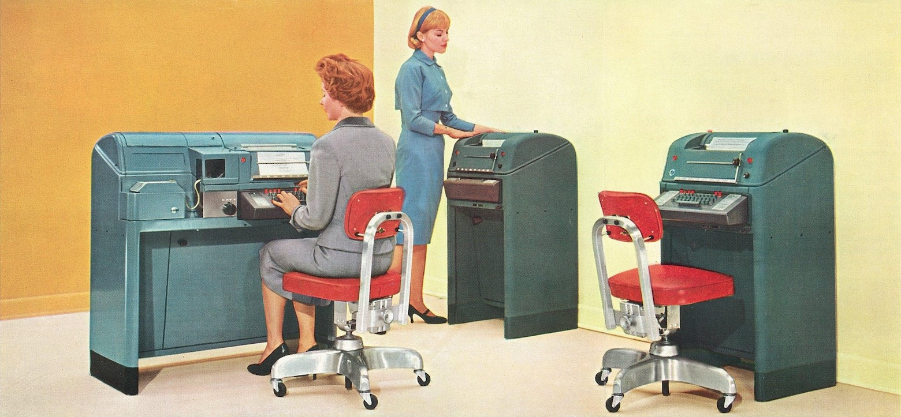

-
New in Teletype: Faster setup and improved multi-file support
March 29, 2018
jasonrudolph

Today’s Teletype release makes it even easier to start coding together. In addition, you now have more flexibility when collaborating on multiple files. Install the update to take advantage of these improvements.
Read more -
Atom 1.25
March 15, 2018
daviwil
Atom 1.25 has been released on our stable channel and includes GitHub package improvements, improved syntax highlighting and code folding, Python and HTML language improvements and more.
Read more -
Atom 1.24
February 13, 2018
smashwilson
Atom 1.24 has been released on our stable channel and includes read-only TextEditors, asynchronous context menus, and automatic scrolling on folding and unfolding.
Read more -
The State of Atom's Performance
January 10, 2018
maxbrunsfeld
Our original goal in building Atom was to create the most hackable text editor that we could imagine. This overarching goal shaped Atom’s architecture and our team’s early priorities. Since Atom launched, its extensibility has been validated by numerous ambitious projects that have been built on top of it, like Facebook’s Nuclide, the Juno IDE for Julia, and the Learn.co IDE, as well as by the thousands of community packages and themes published to atom.io.
Atom has proven to be as extensible as we had hoped, and our focus over the last two years has shifted from building out an extensible system to achieving excellent performance. Now that 2017 has come to an end, we’re taking a moment to reflect on the performance improvements that we’ve made in the past year and the next improvements we’ll be tackling in 2018.
Read more -
Atom 1.23
December 12, 2017
iolsen
Atom 1.23 is now available on the stable channel and includes a new feature for packages to register URI handlers, the ability to register hidden commands, as well as editor performance improvements.
Read more -
Code together in real time with Teletype for Atom
November 15, 2017
nathansobo

Writing code with another programmer is a great way to absorb knowledge, challenge yourself with new perspectives, and ultimately write better software. It can also be a fulfilling way to get to know the mind of another human being. Unfortunately, the logistics of writing code with another programmer can be such a hassle that many people don’t bother. Here are some of the common obstacles:
- Sharing the same physical machine is impossible for remote teams, and can be challenging to organize even when teammates share the same office.
- Cloud-based IDEs and remote
tmuxsessions ask you to move your entire workflow into a hosted environment, which isn’t always possible or desirable. - The connection latency of screen sharing can lead to an awkward dynamic where only one collaborator can comfortably edit.
Social coding shouldn’t have to be this hard! Today, we’re taking a first step toward making it just as easy to code together as it is to code alone with Teletype for Atom. At the dawn of computing, teletypes were used to create a real-time circuit between two machines so that anything typed on one machine appeared at the other end immediately. Following in these electro-mechanical footsteps, Teletype for Atom wires the keystrokes of remote collaborators directly into your programming environment, enabling conflict-free, low-latency collaborative editing for any file you can open in Atom.
Read more -
Atom 1.22
November 7, 2017
kuychaco
-
Atom's new concurrency-friendly buffer implementation
October 12, 2017
Several Atom features depend on potentially long-running computations based on the contents of open buffers, but until recently, it was only possible to access a buffer’s text from JavaScript running on the main thread. This made it difficult to guarantee Atom’s responsiveness in all scenarios, especially when editing larger files.
That situation changed with the release of Atom 1.19, which opened the door to greatly increased parallelism via a new text-storage data structure that is implemented in C++. This new design provides many benefits for performance and scalability, chief among them the ability for worker threads to read snapshots of previous buffer states without blocking writes on the main thread. In this post, we’ll describe Atom’s new approach to text storage in depth, then explore the first of many optimizations it makes possible.
Read more -
Atom 1.21
October 3, 2017
-
Atom 1.20
September 12, 2017
Atom 1.20 is available on the stable channel today and features numerous improvements in the
Read moregithub,find-and-replace, andlanguage-phppackages.